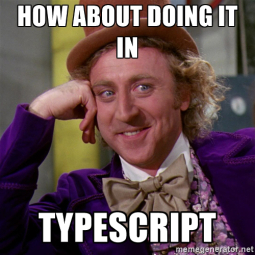

TypeScript
JavaScript that scales.
It is that simple.

What is it?
It's just JavaScript typedAnd better!
It exposes the good parts of
JavaScript in a very simple way!
Why?
JavaScript is one of the top 10 languages for 2016
According to IEEE Spectrum
Code Editors and even IDEs cannot predict the variable types
Variable types are decided on runtime
On big projects no help is frustating and not efficient
And much more...

Say hello to TypeScript!
Compilation
TypeScript will compile the code and generate compilation errors, if it finds some sort of syntax errors
Strong Static Typing
TypeScript supports type inference
Supports type definitions
Existing JavaScript libraries may be used along with TypeScript
Supports Object Oriented Programming
Supports Object Oriented Programming
TypeScript and ECMAScript

Components of TypeScript

Architectural Overview

Compilation

Before we know more about this awesome language
Some history
After being developed for 2 years
In October 2012 the version 0.8 was made public by2013
At version 0.9 added support for generics
function identity(arg: T): T {
return arg;
}
2014
Version 1.0 was released
Visual Studio provides built-in support
A new compiler is released
Claiming 5x performance gains
Source code moved from CodePlex to GitHub
2016
TypeScript 2.0 was released
Several new features
We'll explain it later
Currently at version 2.2
Influences
JavaScript
Java
C#
Types
Highlights
Bear in mind TypeScripts converts to JavaScript
TypeScript 1.1
Protected
class Thing {
protected doSomething() { /* ... */ }
}
class MyThing extends Thing {
public myMethod() {
// OK, can access protected member from subclass
this.doSomething();
}
}
var t = new MyThing();
t.doSomething(); // Error, cannot call protected member from outside class
TypeScript 1.3
Tuple types
// Declare a tuple type
var x: [string, number];
// Initialize it
x = ['hello', 10]; // OK
// Initialize it incorrectly
x = [10, 'hello']; // Error
console.log(x[0].substr(1)); // OK
console.log(x[1].substr(1)); // Error, 'number' does not have 'substr'
TypeScript 1.4
Union types
interface RunOptions {
program: string;
commandline: string[]|string|(() => string);
}
var opts: RunOptions = /* ... */;
opts.commandline = '-hello world'; // OK
opts.commandline = ['-hello', 'world']; // OK
opts.commandline = [42]; // Error, number is not string or string[]
Stricter Generics
function equal(lhs: T, rhs: T): boolean {
return lhs === rhs;
}
// Previously: No error
// New behavior: Error, no best common type between 'string' and 'number'
var e = equal(42, 'hello');
Better Type Inference
var x = [1, 'hello']; // x: Array
x[0] = 'world'; // OK
x[0] = false; // Error, boolean is not string or number
Template strings
var name = "TypeScript";
var greeting = `Hello, ${name}! Your name has ${name.length} characters`;
Which compiles to
var name = "TypeScript!";
var greeting = "Hello, " + name + "! Your name has " + name.length + " characters";
Type Guards
typeof
To test variables
var x: string | HTMLElement = /* ... */;
if(typeof x === 'string') {
// x is string here, as shown above
}
else {
// x is HTMLElement here
console.log(x.innerHTML);
}
instanceof
To test classes and union types
class Dog { woof() { } }
class Cat { meow() { } }
var pet: Dog|Cat = /* ... */;
if (pet instanceof Dog) {
pet.woof(); // OK
}
let declarations
const declarations
const enum declarations
TypeScript 1.5
ES6 Modules
Export Declarations
interface Stream { ... }
function writeToStream(stream: Stream, data: string) { ... }
export { Stream, writeToStream as write }; // writeToStream exported as write
import { read, write, standardOutput as stdout } from "./inout";
var s = read(stdout);
write(stdout, s);
import * as io from "./inout";
var s = io.read(io.standardOutput);
io.write(io.standardOutput, s);
namespace keyword
namespace Math {
export function add(x, y) { ... }
}
for..of support
for (var v of expr) { }
Decorators
function f() {
console.log("f(): evaluated");
return function (target, propertyKey: string, descriptor: PropertyDescriptor) {
console.log("f(): called");
}
}
function g() {
console.log("g(): evaluated");
return function (target, propertyKey: string, descriptor: PropertyDescriptor) {
console.log("g(): called");
}
}
class C {
@f()
@g()
method() {}
}
f(): evaluated
g(): evaluated
g(): called
f(): called
Computed properties
function makeNode(name: string, initialNeighbor: Node): Node {
return {
name: name,
neighbors: {
[initialNeighbor.name]: initialNeighbor
}
}
}
TypeScript 1.6
Abstract classes and methods
abstract class Base {
abstract getThing(): string;
getOtherThing() { return 'hello'; }
}
let x = new Base(); // Error, 'Base' is abstract
// Error, must either be 'abstract' or implement concrete 'getThing'
class Derived1 extends Base { }
class Derived2 extends Base {
getThing() { return 'hello'; }
foo() {
super.getThing();// Error: cannot invoke abstract members through 'super'
}
}
var x = new Derived2(); // OK
var y: Base = new Derived2(); // Also OK
y.getThing(); // OK
y.getOtherThing(); // OK
Improvements on other features
TypeScript 1.7
Async/Await
"use strict";
// printDelayed is a 'Promise'
async function printDelayed(elements: string[]) {
for (const element of elements) {
await delay(200);
console.log(element);
}
}
async function delay(milliseconds: number) {
return new Promise(resolve => {
setTimeout(resolve, milliseconds);
});
}
printDelayed(["Hello", "beautiful", "asynchronous", "world"]).then(() => {
console.log();
console.log("Printed every element!");
});
TypeScript 1.8
Type parameters as constraints
function assign(target: T, source: U): T {
for (let id in source) {
target[id] = source[id];
}
return target;
}
let x = { a: 1, b: 2, c: 3, d: 4 };
assign(x, { b: 10, d: 20 });
assign(x, { e: 0 }); // Error
Control flow analysis errors

TypeScript 2.0
--strictNullChecks
// Compiled with --strictNullChecks
let x: number;
let y: number | undefined;
let z: number | null | undefined;
x = y = z = 1; // Ok
x = undefined; // Error
y = z = undefined; // Ok
x = null; // Error
y = null; // Error
z = null; // Ok
x = y; // Error
x = z; // Error
y = x; // Ok
y = z; // Error
z = x; // Ok
z = y; // Ok
Private and Protected Constructors
class Singleton {
private static instance: Singleton;
private constructor() { }
static getInstance() {
if (!Singleton.instance) {
Singleton.instance = new Singleton();
}
return Singleton.instance;
}
}
let e = new Singleton(); // Error: constructor of 'Singleton' is private.
let v = Singleton.getInstance();
Abstract properties and accessors
abstract class Base {
abstract name: string;
abstract get value();
abstract set value(v: number);
}
class Derived extends Base {
name = "derived";
value = 1;
}
TypeScript 2.1
keyof and Lookup Types
interface Person {
name: string;
age: number;
location: string;
}
type K1 = keyof Person; // "name" | "age" | "location"
type K2 = keyof Person[]; // "length" | "push" | "pop" | "concat" | ...
type K3 = keyof { [x: string]: Person }; // string
TypeScript 2.2
Mix-in classes
TypeScript did not have a type that represents the non-primitive type, i.e. any thing that is not number, string, boolean, symbol, null, or undefined.
declare function create(o: object | null): void;
create({ prop: 0 }); // OK, JSON
create(null); // OK
create(42); // Error
create("string"); // Error
create(false); // Error
create(undefined); // Error
object type
TypeScript did not have a type that represents the non-primitive type, i.e. any thing that is not number, string, boolean, symbol, null, or undefined.
declare function create(o: object | null): void;
create({ prop: 0 }); // OK, JSON
create(null); // OK
create(42); // Error
create("string"); // Error
create(false); // Error
create(undefined); // Error
TypeScript
vs
Programming Paradigms
TypeScrypt is a Multi-Paradigm language
- Scripting
- Object-Oriented
- Strutured
- Imperative
- Functional
- Generic
Scripting
var aString: string = "Wow, look at this script";
function aFunction(message: string) {
console.log(this.genericString);
}
- Fast to learn and write
- Simple syntax and semantics
- Executed from start to finish
- No explicit entry point (like a main() function)
Object-Oriented
class Person {
private name: string;
private age: number;
constructor(name: string, age: number) {
this.name = name;
this.age = age;
}
}
TypeScript is a class-based language: Objects are running instances of Classes.
Concept of "objects", containing fields of data known as attributes and dedicated code procedures known as methods, that can be accessed or modified with the "this." prefix.
Strutured & Imperative
Aims to improve code Clarity and Quality as well as the Velocity of development, describing how the program must operate and behave, using
- SubRoutines
- Block Structures
- For and While-Loops
Functional
In a mathemetical perspective, calling the same function twice with the same parameters, should output the same result.
function add(x: number, y: number): number {
return x + y;
}
Generic
Code is written with types that are to be instantiated later (templates)
function printArraySize<T>(arg: Array<T>): Array<T> {
console.log(arg.length);
return arg;
}
Comparison with close languages
JavaScript...
As we already know, TypeScript is a superset of JavaScript, providing optional static typing , classes and interfaces.


It also benefits IDE's to develop a consistent debugging environment.

And so, we can conclude that it is a better choice when developping larger software systems, being deployable where a regular JavaScript application would run.
... There is also CoffeeScript...
It focuses on other aspects, providing mainly code readability for developers.
However, TypeScript also provides good readability for tools through its optional static typing.
Let's look at some code snippets!
TypeScript
class User {
private id: number;
private firstName: string;
private lastName: string;
constructor(id: number, firstName: string, lastName: string) {
this.id = id;
this.firstName = firstName;
this.lastName = lastName;
}
getId() {
return this.id;
}
getFirstName() {
return this.firstName;
}
getLastName() {
return this.lastName;
}
}
CoffeeScript
class User
constructor (@id, @firstName, @lastName) ->
getId: -> @id
getFirstName: -> @firstName
getLastName: -> @lastName
JavaScript
function User(id, firstName, lastName) {
this.id = id;
this.firstName = firstName;
this.lastName = lastName;
}
User.prototype = {
getId: function() {
return this.id;
}
getFirstName: function() {
return this.firstName;
}
getLastName: function() {
return this.lastName;
}
}

Dart
It's not only developed by Google but also is
Open-Source!
Scalable!!
Object-Oriented!!!
Great for building
- Web applications
- Server applications
- Mobile applications
Yes. Google developed it! :)
class Spacecraft {
String name;
DateTime launchDate;
int launchYear;
// Default constructor
Spacecraft(this.name, this.launchDate) {
// Pretend the following is something you'd actually want to run in
// a constructor.
launchYear = launchDate?.year;
}
// Named constructor that forwards to the default one.
Spacecraft.unlaunched(String name) : this(name, null);
// Method.
void describe() {
print('Spacecraft: $name');
if (launchDate != null) {
int years = new DateTime.now().difference(launchDate).inDays ~/ 365;
print('Launched: $launchYear ($years years ago)');
} else {
print('Unlaunched');
}
}
}
???


Some Benchmarks
Regex-Redux
| Language | Speed | Memory | CPU Load |
|---|---|---|---|
| TypeScript | 4.20 | 650 072 | 4.20 |
| Dart | 31.42 | 469 528 | 33.79 |
Reverse-Complement
| Language | Speed | Memory | CPU Load |
|---|---|---|---|
| TypeScript | 3.67 | 245 580 | 3.94 |
| Dart | 22.98 | 1 728 640 | 28.28 |
Binary-Trees
| Language | Speed | Memory | CPU Load |
|---|---|---|---|
| TypeScript | 50.94 | 929 308 | 51.76 |
| Dart | 42.11 | 486 740 | 56.27 |
Mandelbrot
| Language | Speed | Memory | CPU Load |
|---|---|---|---|
| TypeScript | 50.93 | 367 612 | 50.86 |
| Dart | 1.61 | 70 548 | 4.08 |
Where it has been used?
Typical applications
Frameworks
Core language of Angular 2, a complete new Angular, better structured, considers mobile developmentand increases performance on both applications execution and development speed.


A Widely Known Application Developed With Typescript
Another Great Example
JSWEET
IDE's

Get Started
You know have the full knowledge to do awesome work
First try online

Download and Install
Install TypeScript
npm install -g typescript
Grab a sweet code editor


Compile TypeScript
tsc helloworld.ts

Choose a trending open source TypeScript project

Bibliographic References
Tutorials and Websites